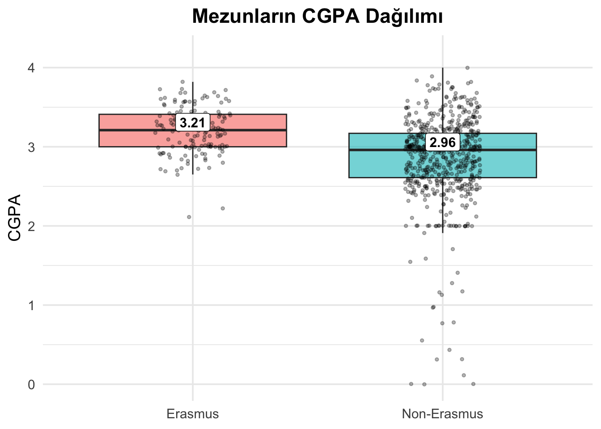
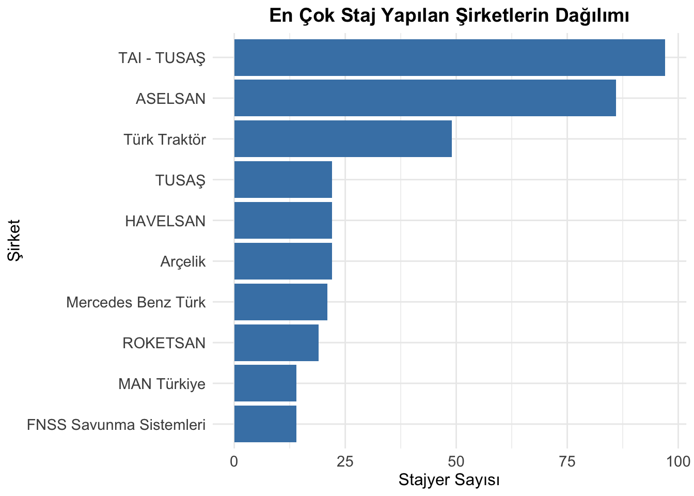

library(dplyr)
Attaching package: 'dplyr'The following objects are masked from 'package:stats':
filter, lagThe following objects are masked from 'package:base':
intersect, setdiff, setequal, unionlibrary(ggplot2)Welcome to my/our project page.
Keep an eye on this space to stay updated with my project activities.
(The titles below are provided as examples; please feel free to adjust them as necessary.)
Bu projede, Hacettepe Üniversitesi Endüstri Mühendisliği bölümü mezun lisans öğrencilerinin kariyer bilgileri incelenerek, mezunların işe başlama süreçleri ve kariyer tercihleri hakkında analizler gerçekleştirilmiştir. Mezunların istihdam edildiği şirketler, bu şirketlerde görev aldıkları pozisyonları, not oratalamaları dağılımları, Erasmus tercihleri ve işe başlama süreleri gibi bilgiler detaylı şekilde analiz edilerek, bu analizler tekrar edilebilir Quarto raporları olarak gösterge paneli oluşturulmasında kullanılmştır.
Veri seti, üniversitenin mezun bilgi sisteminden anonim olarak temin edilmiştir.
Veri kümesi, Hacettepe Üniversitesi Endüstri Mühendisliği bölümünden mezun yaklaşık 800 lisans öğrencisine ait şu bilgileri içermektedir:
▪ GPA (Sayısal): Mezuniyet not ortalaması
▪ Mezun olunan lise türü (Kategorik): Fen, Anadolu, özel lise vs.
▪ Erasmus+ katılım durumu (Kategorik): Evet/Hayır
▪ İşe başlama süresi (Sayısal): Mezuniyetten sonraki süre (ay olarak)
▪ Çalışılan şirket (Kategorik)
▪ İş pozisyonu (Kategorik)
▪ Cinsiyet (Kategorik)
Bu proje, mezunların iş hayatına giriş süreçlerini anlamak, iş bulma süreleri ve tercih ettikleri kariyer yollarını değerlendirmek için seçilmiştir. Hacettepe Üniversitesi Endüstri Mühendisliği bölümü özelindeki mezun profilini anlamak, bölümü tercih edecek adaylara öngörüler sunmak ve gelecekteki mezunlara kariyer danışmanlığı sağlamak projenin temel amacıdır.
Bu aşamada veri analizi öncesi gerçekleştirilen ön işleme adımları açıklanmıştır.
library(dplyr)
Attaching package: 'dplyr'The following objects are masked from 'package:stats':
filter, lagThe following objects are masked from 'package:base':
intersect, setdiff, setequal, unionlibrary(ggplot2)anonim_temiz_veri_listesi <- readRDS("/Users/cagridurmaz/Documents/GitHub/emu660-spring2025-cagridurmaz/islenmis_veri/anonim_temiz_veri_listesi.rds")# --- Settings ---
# Common student ID column name
id_sutun_adi <- "fake_student_id"
# Data frame names
affiliations_df_adi <- "affiliations"
users_df_adi <- "users"
# Filter criteria for affiliations
target_type <- 2 # Change to "2" if type is a string
# Gender column in users
gender_sutun_adi <- "gender"
# --- Validation ---
# Check if the main list exists and is a list
if (!exists("anonim_temiz_veri_listesi") || !is.list(anonim_temiz_veri_listesi)) {
stop("HATA: 'anonim_temiz_veri_listesi' objesi bulunamadı veya liste değil.")
}
# Check if required data frames exist
required_dfs <- c(affiliations_df_adi, users_df_adi)
missing_dfs <- setdiff(required_dfs, names(anonim_temiz_veri_listesi))
if (length(missing_dfs) > 0) {
stop("HATA: Şu DataFrame'ler listede bulunamadı: ", paste(missing_dfs, collapse=", "))
}
affiliations_df <- anonim_temiz_veri_listesi[[affiliations_df_adi]]
users_df <- anonim_temiz_veri_listesi[[users_df_adi]]
# Check if required columns exist
if (!all(c(id_sutun_adi, "type") %in% names(affiliations_df))) {
stop("HATA: '", affiliations_df_adi, "' içinde '", id_sutun_adi, "' veya 'type' sütunları eksik.")
}
if (!all(c(id_sutun_adi, gender_sutun_adi) %in% names(users_df))) {
stop("HATA: '", users_df_adi, "' içinde '", id_sutun_adi, "' veya '", gender_sutun_adi, "' sütunları eksik.")
}
# Filter affiliations and get unique student IDs
filtrelenmis_idler_df <- affiliations_df %>%
filter(type == target_type) %>%
select(all_of(id_sutun_adi)) %>%
distinct()
filtrelenmis_ogrenci_idler <- filtrelenmis_idler_df[[id_sutun_adi]]
cat(" >", length(filtrelenmis_ogrenci_idler), "adet mezun öğrenci bulundu.\n") > 743 adet mezun öğrenci bulundu.# Stop if no students are found
if (length(filtrelenmis_ogrenci_idler) == 0) {
stop("HATA: 'type' = 2 koşuluna uyan öğrenci bulunamadı.")
}
# Filter users to get gender for matching student IDs
gender_df <- users_df %>%
filter(.data[[id_sutun_adi]] %in% filtrelenmis_ogrenci_idler) %>%
select(all_of(id_sutun_adi), all_of(gender_sutun_adi))
# Check if any gender data was found
if (nrow(gender_df) == 0) {
stop("HATA: Filtrelenmiş öğrenci ID'leri için cinsiyet verisi bulunamadı.")
}
# Summarize gender counts and proportions
gender_summary <- gender_df %>%
count(.data[[gender_sutun_adi]]) %>%
mutate(
oran = n / sum(n),
yuzde = oran * 100,
etiket = sprintf("%.1f%%", yuzde)
)
# Rename gender column for clarity
colnames(gender_summary)[1] <- "Cinsiyet"
# Map gender values to Turkish (adjust if gender values differ)
gender_summary <- gender_summary %>%
mutate(Cinsiyet = case_when(
Cinsiyet == "female" ~ "Kadın",
Cinsiyet == "male" ~ "Erkek",
TRUE ~ as.character(Cinsiyet) # Keep other values as is
))
# Create bar plot
p <- ggplot(gender_summary, aes(x = Cinsiyet, y = oran, fill = Cinsiyet)) +
geom_bar(stat = "identity") +
geom_text(aes(label = etiket), vjust = -0.5, size = 4) +
scale_y_continuous(labels = scales::percent, limits = c(0, 1)) +
labs(
title = "Mezunların Cinsiyet Dağılımı",
x = "Cinsiyet",
y = "Oran"
) +
theme_minimal() +
theme(
plot.title = element_text(hjust = 0.5, size = 14, face = "bold"),
axis.text = element_text(size = 12),
axis.title = element_text(size = 12),
legend.position = "none" # Remove legend since x-axis labels are clear
)
# Display the plot (optional, depending on environment)
print(p)
Mezun ve öğrencilerin şehir dağılımı :
library(dplyr)
library(ggplot2)
# 1) type = 2 veya 3 olan öğrencilerin ID'leri
aff_ids <- anonim_temiz_veri_listesi[["affiliations"]] %>%
filter(type %in% c(2, 3)) %>%
pull(fake_student_id)
# 2) users tablosundan o ID'lerle highschool ID'si al
usr_hs <- anonim_temiz_veri_listesi[["users"]] %>%
filter(fake_student_id %in% aff_ids) %>%
select(fake_student_id, highschool)
# 3) highschool ID -> il eşlemesi
hs_prov <- usr_hs %>%
inner_join(
anonim_temiz_veri_listesi[["highschools"]] %>%
select(id, city), # kendi sütun adınızla değiştirin
by = c("highschool" = "id")
) %>%
rename(il = city)
# 4) İllere göre say, oran ve etiket üret
prov_dist <- hs_prov %>%
filter(!is.na(il) & il != "") %>%
count(il) %>%
arrange(desc(n)) %>%
mutate(
pct = n / sum(n),
label = sprintf("%.1f%%", pct * 100)
)
# 5) **Sadece ilk 10 il**i seç
top10_prov <- prov_dist %>%
slice_max(order_by = n, n = 10)
ggplot(top10_prov, aes(
x = reorder(il, -n), # <- -n ile büyükten küçüğe doğru
y = n,
fill = il
)) +
geom_col(width = 0.7) +
geom_text(aes(label = label), vjust = -0.5, size = 3) +
labs(
title = "En Çok Öğrenci/Mezun Gelen İlk 10 İl",
x = "İl",
y = "Kişi Sayısı"
) +
theme_minimal() +
theme(
legend.position = "none",
axis.text.x = element_text(angle = 45, hjust = 1),
plot.title = element_text(hjust = 0.5, face = "bold")
)library(dplyr)
library(ggplot2)
library(forcats)
# --- Settings ---
id_sutun_adi <- "fake_student_id"
works_df_adi <- "works"
country_sutun_adi <- "country"
# --- DataFrames ---
works_df <- anonim_temiz_veri_listesi[[works_df_adi]]
companies_df <- anonim_temiz_veri_listesi[["companies"]]
industries_df <- anonim_temiz_veri_listesi[["industries"]]
# --- 1) Ülke sayısı ---
country_df <- works_df %>%
select(all_of(id_sutun_adi), all_of(country_sutun_adi)) %>%
distinct() %>%
filter(!is.na(.data[[country_sutun_adi]]) & .data[[country_sutun_adi]] != "")
unique_countries <- n_distinct(country_df[[country_sutun_adi]])
# --- 2) Endüstri sayısı ---
industry_df <- works_df %>%
select(all_of(id_sutun_adi), companyid) %>%
distinct() %>%
filter(!is.na(companyid) & companyid != "") %>%
left_join(
companies_df %>% select(id, industry),
by = c("companyid" = "id")
) %>%
filter(!is.na(industry) & industry != "") %>%
left_join(
industries_df %>% select(id, industrytr),
by = c("industry" = "id")
)
unique_industries <- n_distinct(industry_df$industry)
# --- 3) Pozisyon sayısı ---
position_df <- works_df %>%
select(all_of(id_sutun_adi), positionid) %>%
distinct() %>%
filter(!is.na(positionid) & positionid != "")
unique_positions <- n_distinct(position_df$positionid)
# --- 4) İşveren (company) sayısı ---
employer_df <- works_df %>%
select(companyid) %>%
distinct() %>%
filter(!is.na(companyid) & companyid != "")
unique_employers <- n_distinct(employer_df$companyid)
# --- 5) Özet cümlesi ---
cat(sprintf(
"Öğrencilerimiz ve mezunlarımız %d ülke, %d endüstri, %d iş pozisyonu ve %d işverende çalışmış veya halen çalışmaktadır.\n",
unique_countries,
unique_industries,
unique_positions,
unique_employers
))Öğrencilerimiz ve mezunlarımız 28 ülke, 89 endüstri, 540 iş pozisyonu ve 755 işverende çalışmış veya halen çalışmaktadır.Mezunların çalıştığı sektörler :
# Load required packages
library(dplyr)
library(ggplot2)
library(forcats) # For reordering factors
# --- Settings ---
id_sutun_adi <- "fake_student_id"
works_df_adi <- "works"
companies_df_adi <- "companies"
industries_df_adi <- "industries"
companyid_sutun_adi <- "companyid"
company_id_sutun_adi<- "id"
max_industries <- 10 # Kaç endüstri göstereceğiz
# --- Validation ---
if (!exists("anonim_temiz_veri_listesi") || !is.list(anonim_temiz_veri_listesi)) {
stop("HATA: 'anonim_temiz_veri_listesi' objesi bulunamadı veya liste değil.")
}
required_dfs <- c(works_df_adi, companies_df_adi, industries_df_adi)
missing_dfs <- setdiff(required_dfs, names(anonim_temiz_veri_listesi))
if (length(missing_dfs) > 0) {
stop("HATA: Şu DataFrame'ler listede bulunamadı: ", paste(missing_dfs, collapse = ", "))
}
works_df <- anonim_temiz_veri_listesi[[works_df_adi]]
companies_df <- anonim_temiz_veri_listesi[[companies_df_adi]]
industries_df <- anonim_temiz_veri_listesi[[industries_df_adi]]
# industries_df içinde 'industrytr' sütunu olmalı
if (!all(c("id","industrytr") %in% names(industries_df))) {
stop("HATA: '", industries_df_adi, "' içinde 'id' veya 'industrytr' sütunu bulunamadı.")
}
# --- Build industry data frame ---
industry_df <- works_df %>%
select(all_of(id_sutun_adi), all_of(companyid_sutun_adi)) %>%
distinct() %>%
filter(!is.na(.data[[companyid_sutun_adi]]) & .data[[companyid_sutun_adi]] != "") %>%
# önce companyid ile şirket tablosuna, oradan industry id'ye ulaş
left_join(
companies_df %>% select(all_of(company_id_sutun_adi), industry),
by = setNames(company_id_sutun_adi, companyid_sutun_adi)
) %>%
# sonra industry id ile industries_df'e kat, industrytr al
left_join(
industries_df %>% select(id, industrytr),
by = c("industry" = "id")
) %>%
rename(industry_name = industrytr)
# Uyarı: eşleşmeyen kayıtlar
unmatched <- industry_df %>% filter(is.na(industry_name))
if (nrow(unmatched) > 0) {
cat("UYARI:", nrow(unmatched),
"kayıt endüstri ile eşleşmedi. Örnek companyid değerleri:\n")
print(head(unmatched[[companyid_sutun_adi]], 5))
}UYARI: 16 kayıt endüstri ile eşleşmedi. Örnek companyid değerleri:
[1] "1554" "1574" "1580" "1666" "1668"# Geçerli endüstri kayıtlarını filtrele
industry_df <- industry_df %>%
filter(!is.na(industry_name) & industry_name != "")
if (nrow(industry_df) == 0) {
stop("HATA: Geçerli endüstri verisi bulunamadı.")
}
# --- Özet ve Grafik için Sayma ---
unique_industries <- n_distinct(industry_df$industry_name)
industry_summary <- industry_df %>%
count(industry_name) %>%
arrange(desc(n)) %>%
mutate(
oran = n / sum(n),
yuzde = oran * 100,
etiket = sprintf("%.1f%%", yuzde),
industry_name = fct_reorder(industry_name, n)
)
plot_data <- industry_summary %>%
slice_head(n = max_industries)
# --- Plot ---
p <- ggplot(plot_data, aes(y = industry_name, x = yuzde, fill = industry_name)) +
geom_col(show.legend = FALSE) +
geom_text(aes(label = etiket), hjust = 0, size = 3) +
scale_x_continuous(labels = scales::percent_format(scale = 1)) +
labs(
title = "Mezunların Çalıştığı Endüstriler",
subtitle = sprintf("Toplam %d farklı endüstri (İlk %d)", unique_industries, nrow(plot_data)),
x = "Çalışan Yüzdesi (%)",
y = "Endüstri"
) +
theme_minimal() +
theme(
plot.title = element_text(hjust = 0.5, face = "bold"),
plot.subtitle = element_text(hjust = 0.5)
)
print(p)
Mezunların çalıştığı şirketler :
# Load required packages
library(dplyr)
library(ggplot2)
library(forcats) # For reordering factors
# --- Settings ---
# Common student ID column name
id_sutun_adi <- "fake_student_id"
# Data frame names
works_df_adi <- "works"
companies_df_adi <- "companies"
# Column names
companyid_sutun_adi <- "companyid"
company_id_sutun_adi <- "id"
name_sutun_adi <- "name"
# Number of companies to display in the plot (to avoid clutter)
max_companies <- 10
# --- Validation ---
# Check if the main list exists and is a list
if (!exists("anonim_temiz_veri_listesi") || !is.list(anonim_temiz_veri_listesi)) {
stop("HATA: 'anonim_temiz_veri_listesi' objesi bulunamadı veya liste değil.")
}
# Check if required data frames exist
required_dfs <- c(works_df_adi, companies_df_adi)
missing_dfs <- setdiff(required_dfs, names(anonim_temiz_veri_listesi))
if (length(missing_dfs) > 0) {
stop("HATA: Şu DataFrame'ler listede bulunamadı: ", paste(missing_dfs, collapse=", "))
}
works_df <- anonim_temiz_veri_listesi[[works_df_adi]]
companies_df <- anonim_temiz_veri_listesi[[companies_df_adi]]
# Check if required columns exist
required_columns_works <- c(id_sutun_adi, companyid_sutun_adi)
if (!all(required_columns_works %in% names(works_df))) {
missing_cols <- setdiff(required_columns_works, names(works_df))
stop("HATA: '", works_df_adi, "' içinde şu sütunlar eksik: ", paste(missing_cols, collapse=", "))
}
required_columns_companies <- c(company_id_sutun_adi, name_sutun_adi)
if (!all(required_columns_companies %in% names(companies_df))) {
missing_cols <- setdiff(required_columns_companies, names(companies_df))
stop("HATA: '", companies_df_adi, "' içinde şu sütunlar eksik: ", paste(missing_cols, collapse=", "))
}
# Deduplicate by fake_student_id and companyid
company_df <- works_df %>%
select(all_of(id_sutun_adi), all_of(companyid_sutun_adi)) %>%
distinct() %>%
filter(!is.na(.data[[companyid_sutun_adi]]) & .data[[companyid_sutun_adi]] != "") # Remove NA or empty companyid
# Join with companies to get name
company_df <- company_df %>%
left_join(
companies_df %>% select(all_of(company_id_sutun_adi), all_of(name_sutun_adi)),
by = setNames(company_id_sutun_adi, companyid_sutun_adi)
)
# Check for unmatched companyid values
unmatched <- company_df %>% filter(is.na(.data[[name_sutun_adi]]))
if (nrow(unmatched) > 0) {
cat(" UYARI: ", nrow(unmatched), " kayıt şirket ismi ile eşleşmedi. Örnek companyid değerleri:\n")
print(head(unmatched[[companyid_sutun_adi]], 5))
}
# Filter out NA or empty company names
company_df <- company_df %>%
filter(!is.na(.data[[name_sutun_adi]]) & .data[[name_sutun_adi]] != "")
# Stop if no valid company data
if (nrow(company_df) == 0) {
cat("HATA: Geçerli şirket verisi bulunamadı.\n")
cat(" - Eşleşen kayıt sayısı: ", nrow(company_df) + nrow(unmatched), "\n")
cat(" - NA veya boş şirket ismi sayısı: ", nrow(unmatched), "\n")
cat(" - Örnek works$companyid değerleri:\n")
print(head(works_df[[companyid_sutun_adi]], 5))
cat(" - Örnek companies$id değerleri:\n")
print(head(companies_df[[company_id_sutun_adi]], 5))
stop("HATA: Analiz için yeterli veri yok.")
}
# Count unique companies
unique_companies <- n_distinct(company_df[[name_sutun_adi]])
# Stop if no valid company data
if (unique_companies == 0) {
stop("HATA: Geçerli şirket verisi bulunamadı.")
}
# Count employees per company
company_summary <- company_df %>%
count(.data[[name_sutun_adi]]) %>%
arrange(desc(n)) %>%
mutate(
oran = n / sum(n),
yuzde = oran * 100,
etiket = sprintf("%.1f%%", yuzde),
# Reorder company names for plotting (based on n for consistency)
!!name_sutun_adi := fct_reorder(.data[[name_sutun_adi]], n)
)
# Limit to top N companies for plotting
plot_data <- company_summary %>%
slice_head(n = max_companies)
# Create horizontal bar plot with percentages on x-axis
p <- ggplot(plot_data, aes(y = .data[[name_sutun_adi]], x = yuzde, fill = .data[[name_sutun_adi]])) +
geom_bar(stat = "identity") +
geom_text(aes(label = etiket), hjust = 0, size = 3.0, angle = 0) + # Rotate percentage labels
scale_x_continuous(labels = scales::percent_format(scale = 1)) + # Format x-axis as percentages
labs(
title = "Mezunların Çalıştığı Şirketler",
subtitle = sprintf("Toplam %d Farklı şirket (İlk %d şirket)", unique_companies, nrow(plot_data)),
x = "Çalışan Yüzdesi (%)",
y = "Şirket"
) +
theme_minimal() +
theme(
plot.title = element_text(hjust = 0.5, size = 14, face = "bold"),
plot.subtitle = element_text(hjust = 0.5, size = 12),
axis.text.x = element_text(size = 10),
axis.text.y = element_text(size = 10),
axis.title = element_text(size = 12),
legend.position = "none" # Remove legend since y-axis labels are clear
)
# Display the plot (optional, depending on environment)
print(p)Öğrencilerin İşe Giriş Metotları
library(dplyr)
library(ggplot2)
library(scales)
# 1) Gerekli veri setlerini al
works <- anonim_temiz_veri_listesi[["works"]]
employment_methods <- anonim_temiz_veri_listesi[["employmentmethod"]]
affiliations <- anonim_temiz_veri_listesi[["affiliations"]]
# 2) Sadece type = 2 veya 3 (mezun + öğrenci) olan ID’ler
valid_ids <- affiliations %>%
filter(type %in% c(2, 3)) %>%
pull(fake_student_id) %>%
unique()
# 3) Bu ID’lerle works’u filtrele ve her kişinin sadece ilk employmentmethod kaydını tut
method_dist <- works %>%
filter(fake_student_id %in% valid_ids,
!is.na(employmentmethod) & employmentmethod != "") %>%
distinct(fake_student_id, .keep_all = TRUE) %>%
select(fake_student_id, employmentmethod)
# 4) employmentmethod ID → name eşlemesi
method_dist <- method_dist %>%
inner_join(
employment_methods %>% select(id, name),
by = c("employmentmethod" = "id")
)
# 5) Metot başına çalışan sayısı ve oranı hesapla
method_summary <- method_dist %>%
count(name, name = "n") %>%
arrange(desc(n)) %>%
mutate(
pct = n / sum(n),
label = percent(pct, accuracy = 0.1)
)
# 6) Grafik — en çoktan daha aza yatay bar
ggplot(method_summary, aes(
x = n,
y = reorder(name, n),
fill = name
)) +
geom_col(show.legend = FALSE, width = 0.7) +
geom_text(aes(label = label), hjust = -0.1, size = 3) +
scale_x_continuous(
expand = expansion(mult = c(0, .1)),
labels = comma
) +
labs(
title = "Mezun ve Öğrenci İşe Giriş Metotları",
subtitle = sprintf("Toplam %d farklı metot", n_distinct(method_summary$name)),
x = "Çalışan Sayısı",
y = "İşe Giriş Metodu"
) +
theme_minimal(base_size = 13) +
theme(
axis.text.y = element_text(size = 10),
plot.title = element_text(hjust = 0.5, face = "bold"),
plot.subtitle = element_text(hjust = 0.5),
plot.margin = margin(5, 20, 5, 5)
)
Mezunların Çalıştığı Pozisyonlar :
library(dplyr)
library(ggplot2)
library(scales)
# 1) Veri setlerini al
users <- anonim_temiz_veri_listesi[["users"]]
affiliations <- anonim_temiz_veri_listesi[["affiliations"]]
works <- anonim_temiz_veri_listesi[["works"]]
positions <- anonim_temiz_veri_listesi[["positions"]]
# 2) Sadece mezunların ID'lerini (type == 2) al
grad_ids <- affiliations %>%
filter(type == 2) %>%
pull(fake_student_id)
# 3) works'u mezunlarla sınırlayıp, her mezunun ilk kaydını tut
works_grad <- works %>%
filter(fake_student_id %in% grad_ids,
!is.na(positionid) & positionid != "") %>%
distinct(fake_student_id, .keep_all = TRUE)
# 4) Pozisyon adlarını ekle
pos_dist <- works_grad %>%
inner_join(
positions %>% select(id, position),
by = c("positionid" = "id")
)
# 5) Toplam pozisyon ve mezun sayısı
total_positions <- n_distinct(pos_dist$position)
total_people <- n_distinct(pos_dist$fake_student_id)
message(sprintf("Mezunlarımız %d farklı pozisyonda, toplam %d kişi çalışmaktadır.",
total_positions, total_people))Mezunlarımız 223 farklı pozisyonda, toplam 508 kişi çalışmaktadır.# 6) Pozisyon başına mezun sayısını ve oranını hesapla
pos_summary <- pos_dist %>%
count(position, name = "n") %>%
arrange(desc(n)) %>%
mutate(
pct = n / sum(n),
label = percent(pct, accuracy = 0.1)
)
# 7) İlk 10 pozisyonu seç
top10_pos <- pos_summary %>% slice_max(order_by = n, n = 10)
# 8) Yatay bar chart (en çoktan en aza)
ggplot(top10_pos, aes(
x = pct,
y = reorder(position, pct),
fill = position
)) +
geom_col(width = 0.6) +
geom_text(aes(label = label),
hjust = -0.1, size = 3) +
scale_x_continuous(
labels = percent_format(),
limits = c(0, max(top10_pos$pct) * 1.1)
) +
labs(
title = "Mezunların En Çok Çalıştığı İlk 10 Pozisyon",
subtitle = sprintf("Toplam %d pozisyon, %d mezun", total_positions, total_people),
x = "Mezun Oranı",
y = "Pozisyon"
) +
theme_minimal() +
theme(
legend.position = "none",
axis.text.y = element_text(size = 10),
plot.title = element_text(hjust = 0.5, face = "bold"),
plot.subtitle = element_text(hjust = 0.5)
)
Erasmus Programı Katılımları :
library(dplyr)
library(ggplot2)
library(scales)
# ---- 1) Data hazırlığı ----
affiliations <- anonim_temiz_veri_listesi[["affiliations"]]
erasmus <- anonim_temiz_veri_listesi[["erasmus"]]
universities <- anonim_temiz_veri_listesi[["universities"]]
# ---- 2) Affiliations türü 2 veya 3 olan öğrencilerin ID’leri ----
valid_ids <- affiliations %>%
filter(type %in% c(2, 3)) %>%
pull(fake_student_id) %>%
unique()
# ---- 3) Bu öğrenciler arasından Erasmus’a gitmiş olanları seç ----
eras_valid <- erasmus %>%
filter(fake_student_id %in% valid_ids)
# ---- 4) Her kaydı üniversite tablosuyla birleştirip ülke bilgisini al ----
eras_country <- eras_valid %>%
inner_join(
universities %>% select(id, country),
by = c("universityid" = "id")
) %>%
# eksik veya boş ülke adlarını at
filter(!is.na(country) & country != "") %>%
# aynı öğrenci birden fazla kez sayılmasın
distinct(fake_student_id, country)
# ---- 5) Ülke bazında öğrenci sayısını, sıralı hale getir ----
country_counts <- eras_country %>%
count(country, name = "n") %>%
arrange(desc(n))
total_countries <- n_distinct(country_counts$country)
total_students <- n_distinct(eras_country$fake_student_id)
# ---- 7) Yatay bar chart ile görselleştirme ----
ggplot(country_counts, aes(
x = n,
y = reorder(country, n),
fill = country
)) +
geom_col(show.legend = FALSE, width = 0.7) +
geom_text(aes(label = n), hjust = -0.1, size = 3) +
scale_x_continuous(
expand = expansion(mult = c(0, .1)),
labels = comma
) +
labs(
title = "Erasmus’a Gidilen Ülkelere Göre Öğrenci Sayısı",
subtitle = sprintf("Toplam %d ülke, %d öğrenci", total_countries, total_students),
x = "Öğrenci Sayısı",
y = "Ülke"
) +
theme_minimal(base_size = 14) +
theme(
axis.text.y = element_text(size = 10),
plot.title = element_text(hjust = 0.5, face = "bold"),
plot.subtitle = element_text(hjust = 0.5),
plot.margin = margin(5, 20, 5, 5)
)
Erasmus Programı’na Göre Not Dağılımı
library(dplyr)
library(ggplot2)
# 1) affiliations içindeki cgpa’yı numeric'e çevir
affiliations <- anonim_temiz_veri_listesi[["affiliations"]] %>%
mutate(
cgpa = as.numeric(gsub(",", ".", cgpa))
)Warning: There was 1 warning in `mutate()`.
ℹ In argument: `cgpa = as.numeric(gsub(",", ".", cgpa))`.
Caused by warning:
! NAs introduced by coercion# 2) Erasmus’a giden mezunların ID’leri
grad_erasmus_ids <- affiliations %>%
filter(type == 2) %>%
pull(fake_student_id) %>%
intersect(
anonim_temiz_veri_listesi[["erasmus"]] %>% pull(fake_student_id)
)
# 3) Sadece mezun + geçerli cgpa, birden fazla kayıt varsa tekilleştir
gpa_df <- affiliations %>%
filter(type == 2, !is.na(cgpa)) %>%
distinct(fake_student_id, cgpa) %>%
mutate(
Grup = if_else(
fake_student_id %in% grad_erasmus_ids,
"Erasmus",
"Non-Erasmus"
)
)
# 4) Medyan değerleri hazırla
median_df <- gpa_df %>%
group_by(Grup) %>%
summarize(medyan = median(cgpa, na.rm = TRUE)) %>%
ungroup() %>%
mutate(label = sprintf("%.2f", medyan))
# 5) Boxplot + jitter + medyan etiketleri
ggplot(gpa_df, aes(x = Grup, y = cgpa, fill = Grup)) +
geom_boxplot(outlier.shape = NA, alpha = 0.6) +
geom_jitter(width = 0.15, size = 1, alpha = 0.3, na.rm = TRUE) +
# Medyan etiketlerini beyaz zeminde, kutunun üstüne taşıyoruz
geom_label(
data = median_df,
aes(x = Grup, y = medyan, label = label),
nudge_y = 0.1, # kutunun biraz üstüne
fill = "white", # okunurluk için
fontface = "bold",
size = 4
) +
coord_cartesian(
ylim = c(
min(gpa_df$cgpa, na.rm = TRUE),
max(gpa_df$cgpa, na.rm = TRUE) * 1.05
)
) +
labs(
title = "Mezunların CGPA Dağılımı",
x = NULL,
y = "CGPA"
) +
theme_minimal(base_size = 14) +
theme(
legend.position = "none",
plot.title = element_text(hjust = 0.5, face = "bold")
)xxxxxx